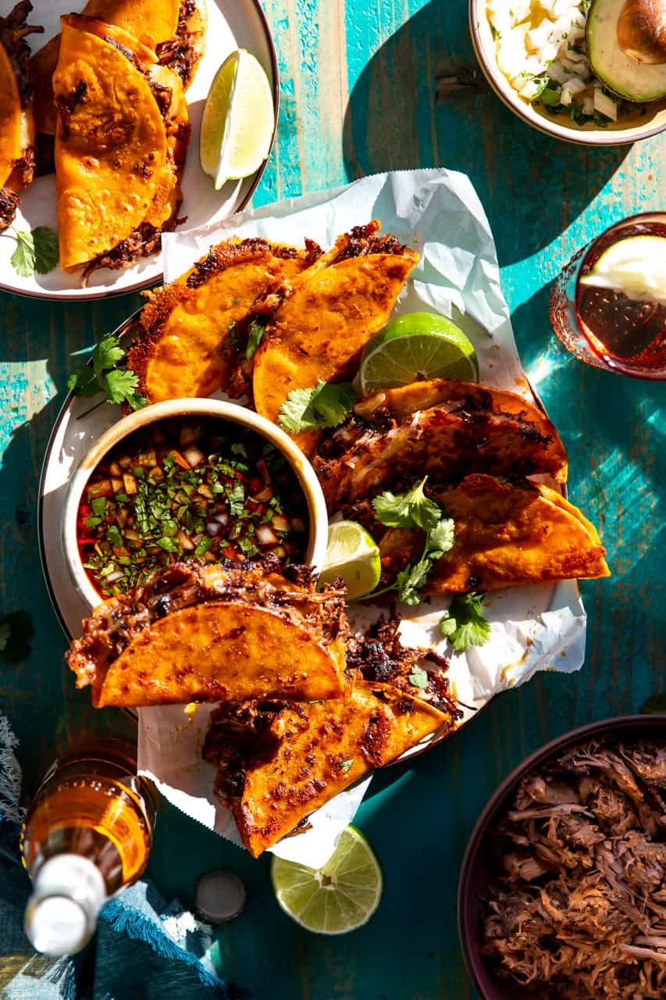

Birria Tacos

Description:
Birria is a Mexican dish from the state of Jalisco. It is a traditional soup or stew made from a combination of chili pepper-based goat meat adobo, garlic, cumin, bay leaves, and thyme, and cooked at a low heat. Birria is slow-stewed in a pot, and differs from barbacoa, which is cooked underground.
Ingredients
- 7-8 cups hot water
- 4 lbs chuck roast, cut into 4 large chunks
- 2 lbs short ribs (bone in), or back ribs bone in
- 1 large white onion, dry skins removed, cut in half crosswise
- 1 garlic bulb, cut the narrow top off, no need to peel
- Garnishes: Chopped cilantro, green onions, toasted sesame seeds, Furikake (highly recommended)
- 1 carrot, cut in half crosswise, then cut in half (4 large pieces of carrot)
- 5 bay leaves, dried
- 8 guajillo chiles, stems cut off and seeds removed
- 3 tbsp chicken boullion
- 1-2 tsp chili powder
- 1 tsp mexican oregano
- 1 tsp ground cumin
- 1 tsp salt, (adjust to taste)
- 14-16 white corn tortillas
- 2 cups quesadilla cheese, or any good melting cheese
Steps:
- I don't feel like copying and pasting the instructions anymore. Go here "Beef Birria Tacos"